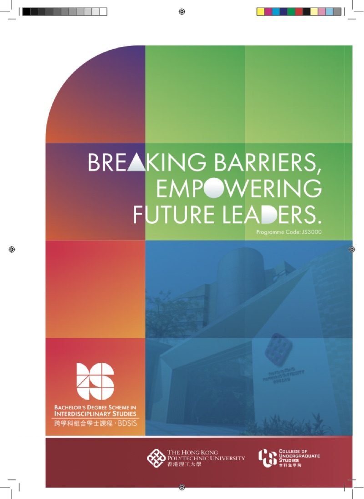
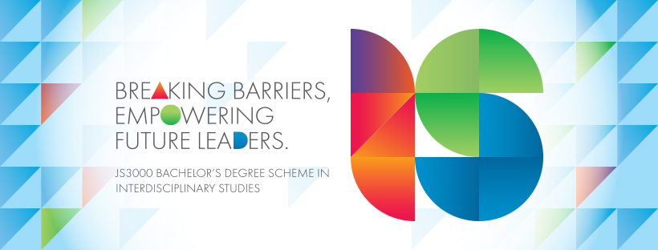
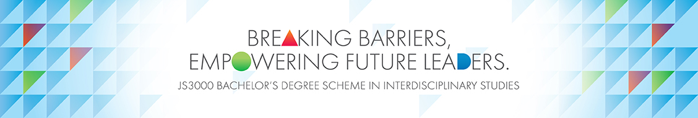

What exists today, how marks combine, where the brand lives online — and what should be built next under the refined system.



The launch set predates this guideline and uses full-page gradients; it remains valid in circulation. New pieces follow the 80/15/5 rule.
BDSIS leads on programme collateral; the university endorses. The established arrangement: BDSIS identity in the layout, with the PolyU and CUS logos paired in a footer band (deep red on the brochure). Never set the three marks in a single row at equal size — hierarchy is BDSIS first, endorsers below.
| Context | Arrangement |
|---|---|
| Programme collateral | BDSIS lockup leads; PolyU + CUS in footer band |
| University-led contexts | PolyU leads; BDSIS appears as programme line or symbol |
| Digital avatars | BDSIS symbol alone (it reads at 48px; the lockup does not) |
| Channel | Handle / detail |
|---|---|
| Instagram · Facebook | bdsis.polyu |
| bdsispolyu | |
| 小红书 (RedNote) | 18642220804 — key channel for Mainland students and parents |
| Web | www.polyu.edu.hk/cus/ |
| Email · Phone · WhatsApp | cus.bdsis@polyu.edu.hk · 3400 8203 · 5408 2246 |
| Programme code | JUPAS JS3000 |
The colleague-facing deck is off-brand today — and it is the most-seen artefact internally.
IG post/story and 小红书 formats with the testimonial pattern (photo · quote · "Name, Year | Focus").
Commission a proper Chinese counterpart to "Breaking Barriers, Empowering Future Leaders."
Official CMYK/Pantone values and logo construction rules from the designer's .ai files.
Masters live in the project folder OneDrive_1_6-10-2026/: BDSIS Logo Pack (Symbol + Programme Name, each in Original/Greyscale/White/Black, CMYK .ai/.pdf/.jpg + RGB .png) · BDSIS Brochure (print-final PDF) · Online Banners and Graphic (banners, slogan lockups, mosaic background, square graphic + components). Naming convention: AssetName_Variant_ColourSpace.ext.